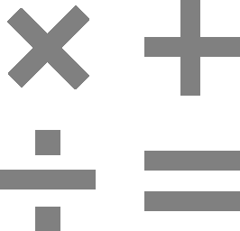

Solution d’archivage / GED
L'objectif de la GED est de parvenir à constituer un référentiel de l'ensemble des documents de
l'entreprise afin d'être en mesure de gérer leur cycle de vie, de leur création à leur destruction.
Nos solutions apportent des bénéfices significatifs en termes de qualité, de productivité, et de
délais. Les documents sont disponibles facilement, immédiatement, à la bonne version, auprès des
personnes autorisées, au bon moment et en tout lieu.

Avantages de la GED
- Référentiel documentaire unique
- Accès protégé et accessibilité rapide
- Protection des documents
- Contrôle d’accès et des modifications
- Unicité des documents
- Gestion des versions et de l’historique
- Journal et audit d’activité
- Informations fiables à jour.
- Partage de l’information centralisée
Les bénéfices
- Meilleure maîtrise de l’information
- Réduction des coûts suite à l’automatisation
- Focalisation des collaborateurs sur leur tâches à VA.
- Facilite le travail collaboratif
- Maîtrise du cycle de vie de l’information
- Réduction des erreurs
- Gain de temps dans la gestion des documents
- Recherche multicritères rapide
- Conformité aux Réglementations et Certification aux Normes
- Gain de place pour le stockage de document